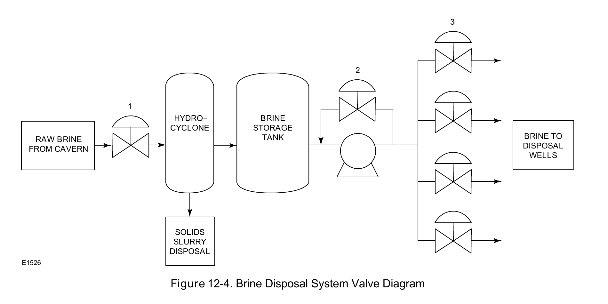

Formation-Type Classification

The brine-disposal valve diagram completes the salt-cavern-only loop — feedwater in, brine out, the mechanism that leaches the storage cavern's volume in the first place.
Fisher Control Valve Sourcebook — Oil & Gas (© 2013 Fisher), Chapter 12 "Natural Gas Storage," Figure 12-4 (drawing number E1526, printed p. 12-4) — "Figure 12-4. Brine Disposal System Valve Diagram." — used directly. Component Index: ogas-cmp-brine-disposal-valve-diagram.